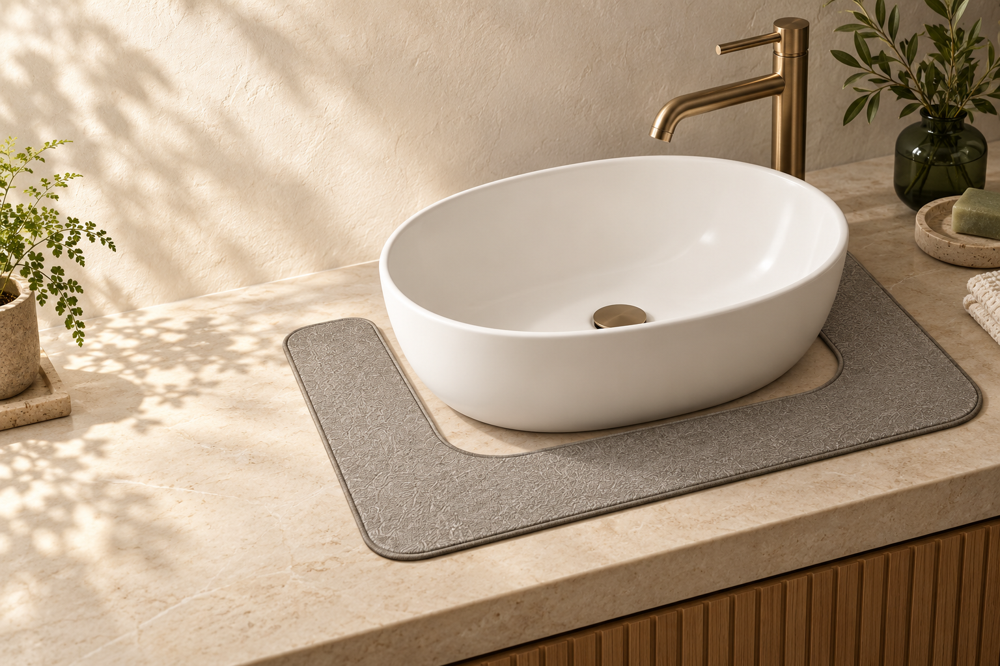
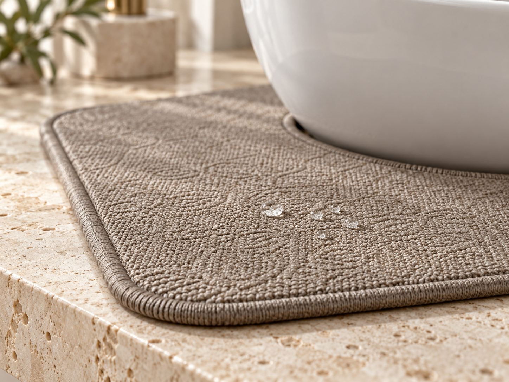
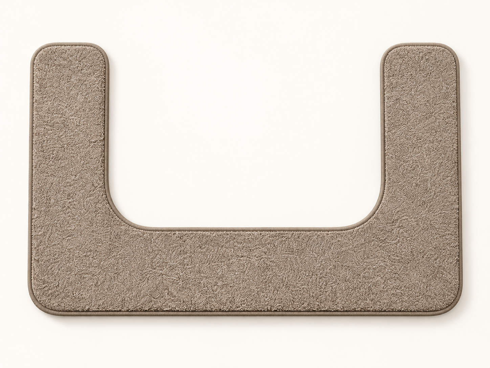

A thoughtful shape
Made to frame the basin while keeping the sink in easy reach.

INTRODUCING THE DRY HABIT HUG™
For the splashes, the drips, and everything in between. Meet the vanity mat that makes the everyday feel a little more considered.

A CLOSER LOOK AT THE DETAILSTHE IDEA / 01
Water has a way of finding the countertop. DRY HABIT HUG™ gives those little everyday splashes a place to land, without asking you to compromise the look of your bathroom.
It’s a simple addition to the routine you already have—soft under a stray drip, easy on the eye, and ready to use again.
Get to know the mat↗A LITTLE THOUGHT GOES A LONG WAY

01 / 03Concept images for layout preview. Replace with final product photography before launch.
MEET THE MAT / 02
A reusable U-shaped vanity mat designed to sit neatly around your sink and absorb everyday splashes.
Final price and availability are being confirmed.
THE THINKING / 03
Made to frame the basin while keeping the sink in easy reach.
Designed for the water that escapes during everyday routines.
Wash cold, then hang or lay flat to dry. Ready for the next day.
GOOD TO KNOW / 04
The current design measures 26 × 17.75 inches overall, with a 19 × 14.25 inch opening. Measure the base of your sink and the clear countertop space around it. The shape of your sink matters too.
Machine wash cold and hang or lay flat to dry. Do not use bleach or fabric softener.
Availability and final pricing are still being confirmed. This page will be updated with purchase details when the product is ready.
ONE DRY HABIT AT A TIME.